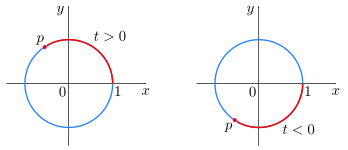
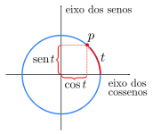

O círculo unitário é o círculo de raio \(1\) centrado na origem do plano \(xy\text{.}\) Sua equação é \(x^2+y^2=1\text{.}\)
Vamos associar cada número real \(t\) a um ponto \(p\) do círculo unitário da seguinte forma: se \(t\) for positivo, iniciando no ponto \((1,0)\text{,}\) movemos sobre o círculo no sentido anti-horário uma distância \(t\text{;}\) se \(t\) for negativo, iniciando no ponto \((1,0)\text{,}\) movemos sobre o círculo no sentido horário uma distância \(|t|\text{:}\)

Figura6.1.2.Círculo unitário e o ponto \(p\text{.}\)
Definição6.1.3.
Definimos \(\cos{t}\) e \(sen~{t}\) como as coordenadas dos ponto \(p\text{,}\) mais precisamente: \(p=(\cos{t}, sen~{t}).\)

Figura6.1.4.Círculo unitário e as coordenadas do ponto \(p\text{.}\)
Proposição6.1.5.
Propriedades imediatas:
Como \(p=(\cos{t}, sen~{t})\) está no círculo unitário, então
As funções seno e cosseno são periódicas com período \(2\pi\text{,}\) ou seja, \(sen~{(t+2n\pi)} = sen~{(t)}\) e \(\cos{(t+2n\pi)} = \cos{(t)}, ~ \forall~ n\in \mathbb{Z}, ~\forall t\in \mathbb{R}\text{.}\)
Gráfico da função \(f(x)=sen(x)\text{.}\)
Figura6.1.9.Gráfico da função \(sen(x)\text{,}\) com \(\frac{-5\pi}{2}\leq x\leq \frac{5\pi}{2}\text{.}\)
Podemos observar que seno é uma função ímpar, ou seja,